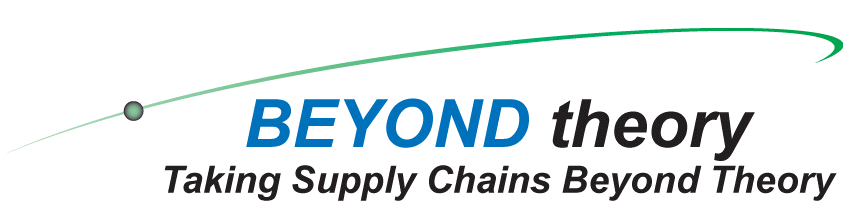

Theorizing Theory: The Impossible Project of Norton


Senior Seminar in
Literary Criticism and Theory

Graff (hooks, Fish, Latour, Knapp suggested)
Download Roundtable Discussion on Norton Here
Theorizing Theory: The Impossible Project of Norton
12/7/10
Page 5, Underline (Red):
Content: "They are written to formula: evocative opening, biography invariably beginning with education and other conditioning factors (father’s occupation, ethnicity if nonwhite, religion chiefly if Jewish), para- phrase of the anthology selections, links with other authors in the anthology (and sometimes with too many others), evaluation, and annotated bibliogra- phy (comprising collected works in the original languages, English versions, biographies, critical studies, and bibliographies). (Though some studies are admitted that I might exclude and a very few are omitted that I would con- sider essential, such as Singleton on allegory"
Page 5, Highlight (Custom Color: #fbed93):
Page 5, Highlight (Custom Color: #fbed93):
Page 7, Underline (Red):
Content: "All this adds up to an obscuring of individual voice. Impersonality pervades the book."
Page 7, Highlight (Custom Color: #fbed93):
Page 9, Underline (Red):
Content: "so many of the individ- ual theories, when pursued to their logical conclusions, seek to undo the very terms that make a neighboring theory tenable. For criticism, it canonizes what has resisted canon- ization."
Page 9, Highlight (Custom Color: #fbed93):
Page 9, Underline (Custom Color: #000000):
Page 9, Underline (Red):
Content: "In short, the neat package that has become the NATC is misleading: theories as historically divergent and wide- ranging as those presented in it rarely exist pacifically side by side; more often they collide and do battle, taking prisoners in the process."
Page 10, Underline (Red):
Content: "the complicated relationship of criticism to theory, even though both terms appear, as if equally weighted, in the title: are they meant to be synonymous?"
Page 16, Underline (Red):
Content: "one does not exactly “read” a book like this). Few users will ever realize how much misunderstanding has been headed o! by the headnotes, how many bad books the bibliographies have quietly steered them away from, to how many “Aha-Erlebnisse”the road was paved by shrewd selec- tions. But one at least glimpses the editors’ distinctive program."
Page 17, Underline (Red):
Content: "the omission of Hans-Georg Gadamer and Paul Ricoeur,"
Page 17, Underline (Red):
Content: "The annotations and headnotes supply information that students in fact need. The quality of these is reasonably good, and in any event a well-considered explanation in a head- note is probably better than one improvised by a teacher in class or, still worse, never supplied, leaving the students bewildered. The subject index will help a smart student ―or teacher―roam across the selections, pulling out thought-provoking parallels and conflicts. The bibliographies give intelli- gent guidance for tackling the various zones of theory."
Page 21, Underline (Red):
Content: "The NATC is neither as relentlessly teleological as nor a s bl a ndl y ne ut r a l Universities manage conflict (not always suc- cessfully) on all levels through a regionalization in which time and space are partitioned into discrete units―semesters, terms, departments, majors, minors, general-education requirements, periods, upper- and lower-level classes, graduate and undergraduate classes, B.A.’s, M.A.’s, Ph.D.’s, sophomores, juniors, seniors―and all such units are interchangeable and equal in theory, if not in practice. the parts are more or less equal and interchangeable and so might be left to “choice.” The table of contents signals this formal equality by the simple expedient of making all the authors and titles for all selections uniform, a metamessage all the more powerful for its invisibility."
Page 23, Underline (Red):
Content: "it is a textbook in disaggre- gated postmodern form, a sampler composed of hundreds of autonomous selections, bibliographies, annotations, and detailed index items, plus five tables of contents and an instructor’s manual, itself o!ering 115 course mod- ules (mobile plug-ins)."